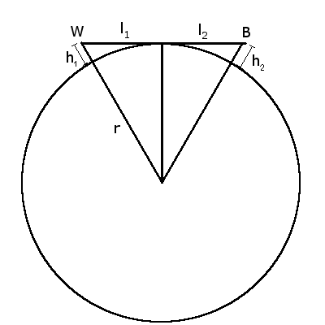

4.4 Wellenausbreitung und Antennenhöhen
d)
Allgemein gilt: \( \lambda = \frac{c}{f} \). Mit \( \lambda \): Wellenlänge, \( c \): Lichtgeschwindigkeit, \( f \): Frequenz. Laut http://www.dvb-t-portal.de/ wird Kanal 50 mit der Frequenz 706 MHz ausgestrahlt.\( \lambda = \frac{299 792 458 m/s}{706000000 Hz} = 0,4246252096 m\)
Stabantennen müssen mindestens \( \frac{\lambda}{4}\) lang sein, die Reflektoren einer Yagiantenne \( \frac{\lambda}{2}\). In unserem Beispiel muss die Stabantenne also mindestens 0,106 m und die Reflektoren der Yagiantenne mindestens 0,212 m lang sein.
e)
Gegeben sind: Erdradius r = 6371000 m, Höhe der Sendeanlage auf dem Ettersberg = 478 m (http://de.wikipedia.org/wiki/Sendeanlage_Weimar_(Ettersberg)), Höhe der Sendeanlage = 29 m, Entfernung Berlin-Weimar = 220250 m (laut maps.google.com, genau: Großer Ettersberg - Kanzleramt), Höhe Berlin Teufelsberg: 120 Meter (http://de.wikipedia.org/wiki/Berlin)
r = 6371000 m
h1 = 478+29 = 507 m
l1+l2 = 220250 m
d = r + h2
gesucht: h2-120 m
Aus dem Satz des Pythagoras folgt:
\( \begin{align} l_{1} = \sqrt{(r + h1)^2 - r^2} \\ l_{1} = \sqrt{(6371000 + 507)^2 - 6371000^2} = 80376,93107 \\ \end{align} \)
\( l_{2} = 220250 m - 80376,93107 m = 139873.0689 m\)
\( \begin{align} d = \sqrt{r^2 + l_{2}^2} \\ d = \sqrt{6371000^2 + 139873.0689^2} = 6372535,247 \\ \\ h_{2} - 120 m = d - r - 120 m= 1415,24709 m\\ \end{align} \)
Der Empfängermast in Berlin müsste unhandliche 1415,25 m hoch sein, damit Kanal 50 vom Ettersberg empfangbar ist.